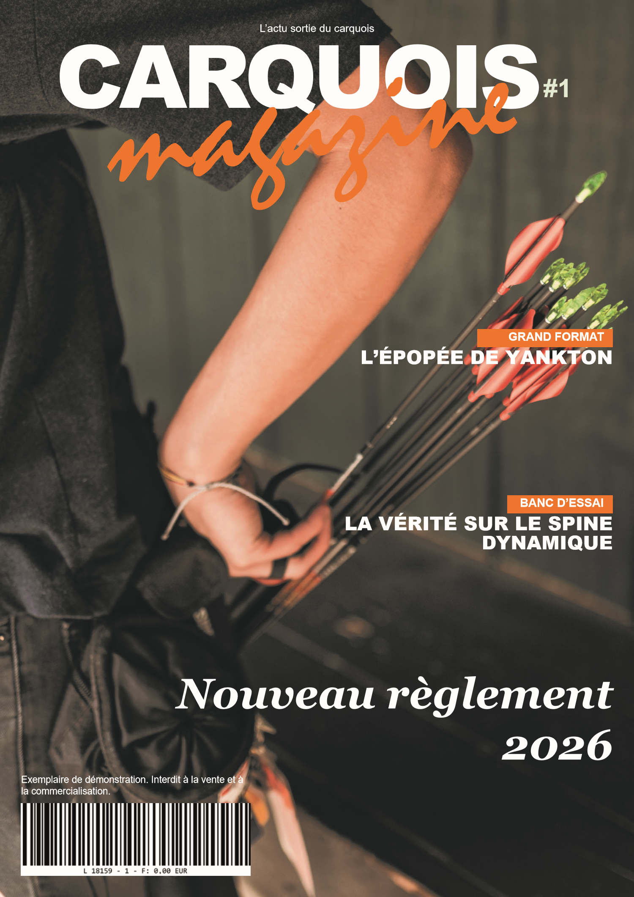
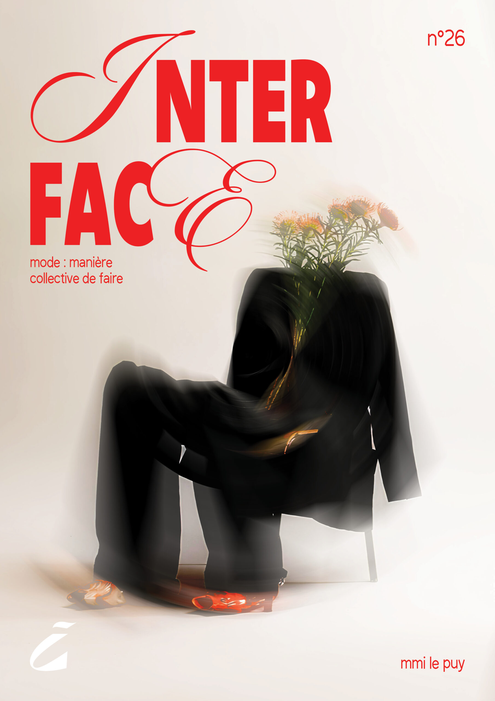
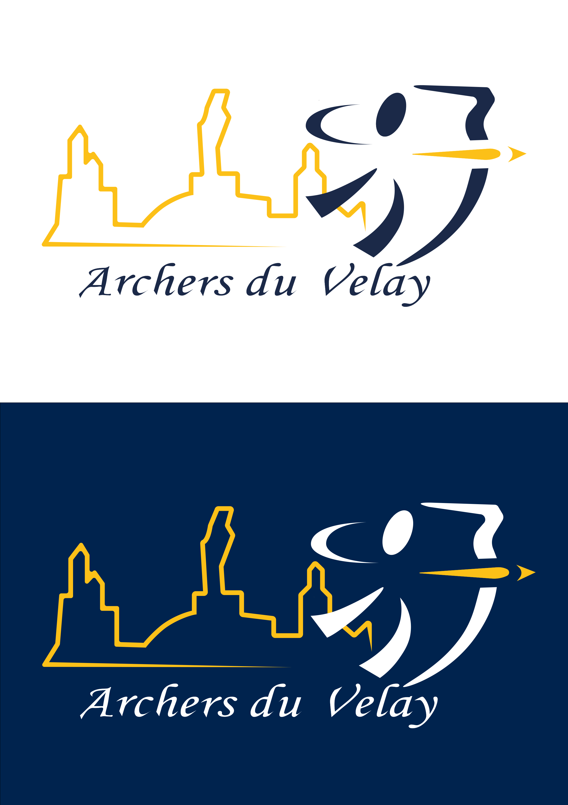
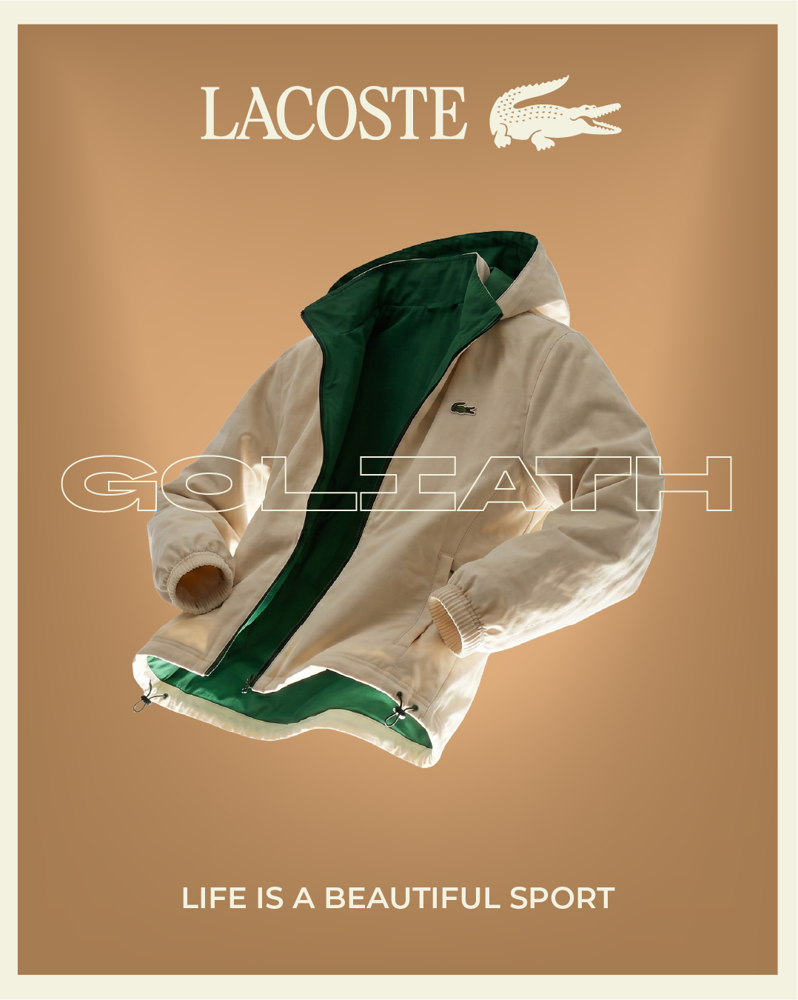
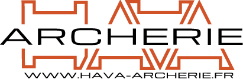
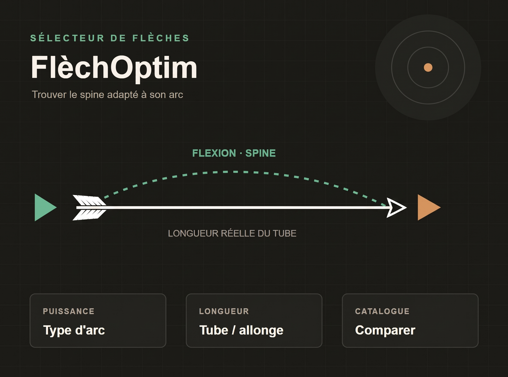
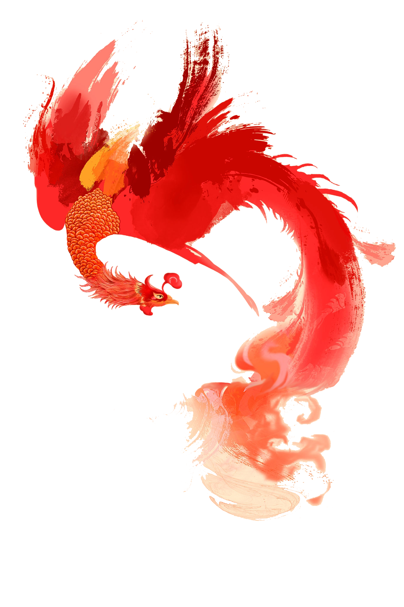
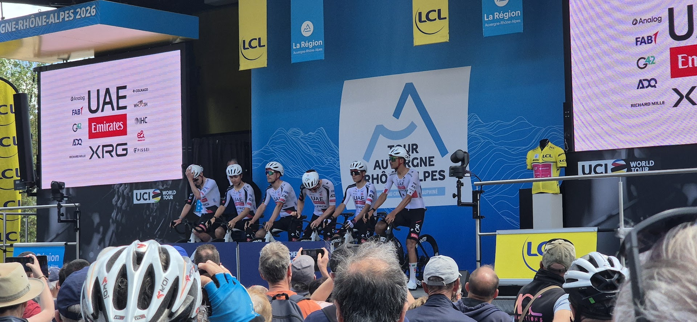
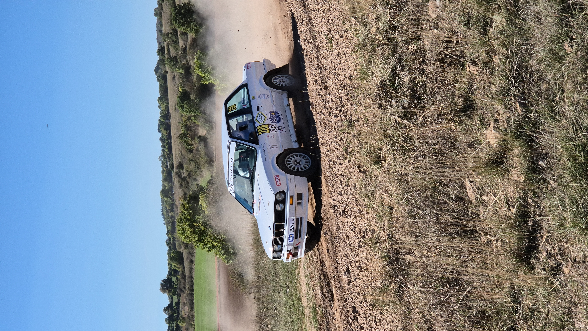
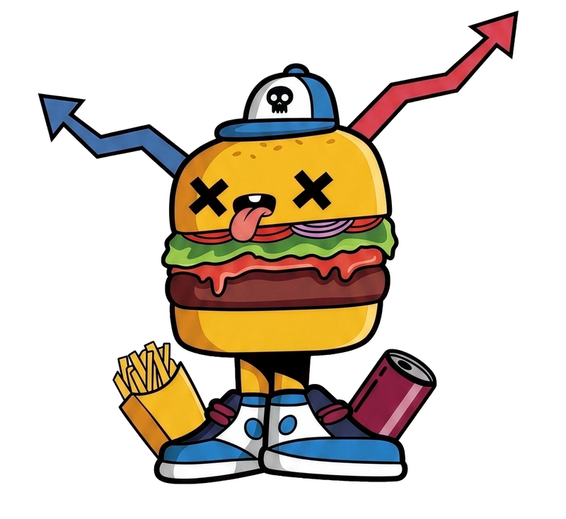

Toutes les réalisations
Monographie complète des projets conduits en BUT MMI (IUT Clermont-Auvergne, site du Puy-en-Velay) et travaux d'atelier personnel : presse imprimée, systèmes d'identité, affiches, développements web et reportage photo.

Carquois Mag N°1
Magazine de 16 pages A4 conçu en totale autonomie : rédaction des dossiers, infographies vectorielles du Barebow, réclames rétro et maquette InDesign.

Union Cycliste du Puy (UCPV)
Campagne « Le vrai record » : système de 27 logotypes déclinés selon les pôles sportifs, affiches A4 print et web, carrousels réseaux sociaux et spot vidéo 30s.

Magazine Interface
Coordination de projet en tant que chef d'équipe, démarchage des annonceurs locaux (1 250 € récoltés), suivi de maquette et tirage physique à 700 exemplaires.

1re Cie des Archers du Velay
Modernisation du blason historique (coquille Saint-Jacques et silhouettes volcaniques) et rédaction de la charte graphique normée en 6 planches.

Campagne Lacoste Goliath
Campagne pour une veste technique chauffante : création de l'affiche publicitaire, tournage et montage vidéo avec effets visuels et intégration WordPress.

Hava Archerie & Scope T53
Refonte du logotype épuré de l'enseigne et série de 5 visuels techniques industriels pour le lancement du Scope T53 2.0 usiné en aluminium 6061.

FlèchOptim — Calculateur de spine
Application web interactive permettant aux archers de calculer leur spine idéal selon la puissance et l'allonge, avec comparateur dynamique de tubes.

After Effects & Storyboard 14 plans
Dossier de pré-production de 6 pages avec 14 plans dessinés et découpage technique multi-caméras, complété par des scènes After Effects en parallaxe 2.5D.

Tour de France (18 affiches)
Collection de 18 compositions graphiques dédiées aux coureurs du peloton cycliste, construites autour des motifs et typographies des maillots officiels.

Rallye des Cardabelles
Série documentaire de 12 clichés pris au cœur des spéciales sur terre autour de Millau, exploration de la trajectoire, de la vitesse et de la poussière.

Illustration, Mascottes & Croquis
Univers street cartoon et character design vectoriel (Burger Mascotte), peintures à l'encre sur partitions musicales, feutres Posca et études d'observation au graphite.